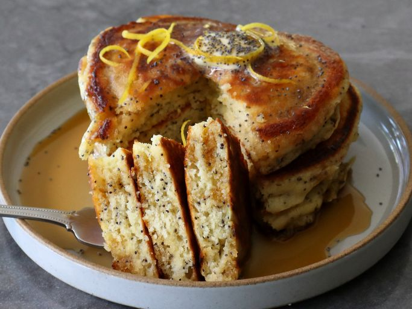

Poppy Seed Pancakes

We’ve done a lot of pancakes recipes over the years, but somehow never got around to ones featuring lemon and poppy seeds. These two ingredients go famously well together, as you probably know from their work in muffins, so it should be no surprise to anyone how delicious they are when pancaked. I was generous with the poppy seeds here, as in, “be careful if you have a drug test” generous, but I went with a fairly subtle approach for the lemon, and just used zest and fresh juice. Many similar recipes call for lemon extract, which will give you a more pronounced lemon flavor, but I didn’t want these tasting like lemon pound cake, so I don’t use any, but feel free to add a few drops if so inclined. Either way, these were some great pancakes, and I really do hope you give them a try soon. Enjoy!
Ingredients
Pancake Mix
- 1 rounded tablespoon white sugar
- 1 tablespoon lemon zest, or more to taste
- 5 teaspoons poppy seeds
- 1 large egg
- 3 tablespoons butter, plus more for the pan
- 3 tablespoons lemon juice
- 1 cup whole milk
- 1 1/2 cups all-purpose flour
- 1 teaspoon kosher salt
- 2 teaspoons baking powder
- 1/4 teaspoon baking soda
- lemon wedges (optional)
Directions
- Combine sugar and lemon zest, and stir to combine. Let stand about 15 minutes.
- Whisk flour, salt, baking powder, and baking soda together in a separate bowl. Set aside.
- Add poppy seeds, egg, and melted butter to the bowl of sugar, and whisk thoroughly. Add lemon juice, milk, and flour mixture. Whisk gently just until flour disappears. Let batter rest for 10 to 15 minutes before using.
- Heat a nonstick skillet over medium heat, and generously grease with melted butter or vegetable oil.
- Transfer about 1/3 cup of batter into the pan for each pancake, and cook until a few bubbles start to pop through the surface, 3 to 4 minutes. Flip and cook the second side 3 to 4 minutes. Serve immediately.